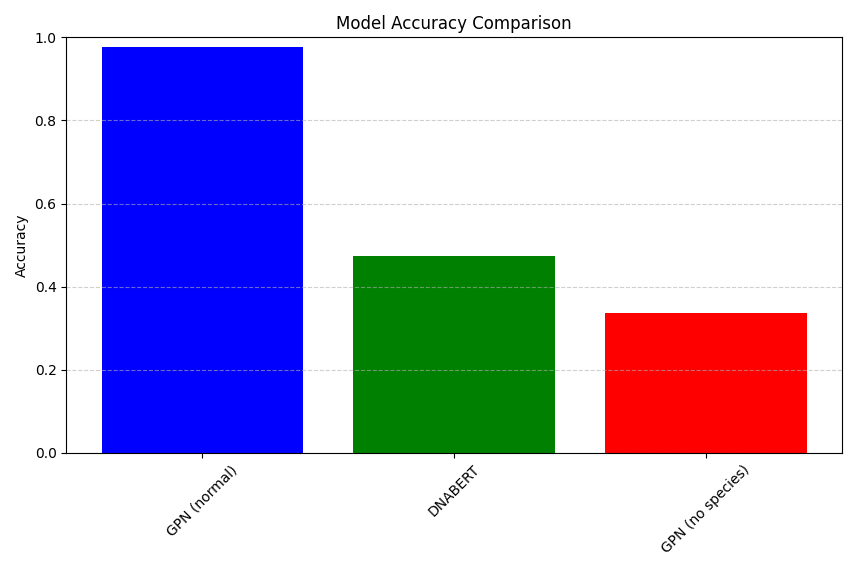
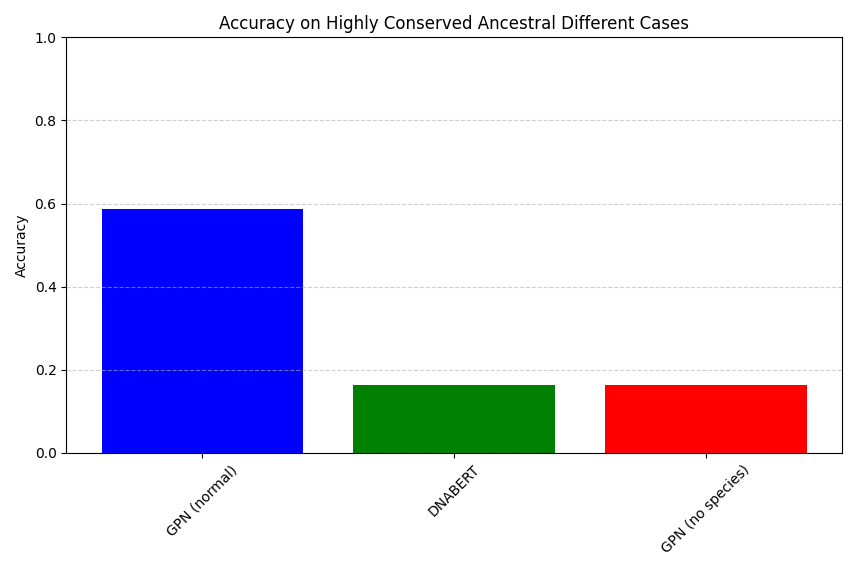
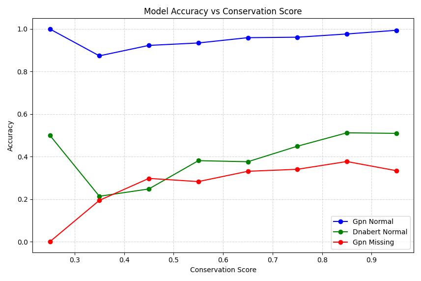

5 Comparing Models
In Chapter 5, we will put these two models — Vanilla BERT and GPN-MSA-BERT — to the test. We will evaluate their performance on:
- Predicting masked bases (MLM accuracy)
- Predicting the functional impact of mutations
This head-to-head comparison will highlight the strengths and weaknesses of each approach. The scripts and tests we cover in this chapter are really abstractions of full evaluations, and there an entirely literature around DNA language model evaluation you should familiarize yourself with if you are going to evaluate these models for academic or industry use(Tang et al. 2024; Patel et al. 2024; Marin et al. 2023).
All scripts for this chapter are found here: https://github.com/MichelNivard/Biological-language-models/tree/main/scripts/DNA/Chapter_5
We have trained two models with very different architectures and goals. We can now compare these models (though it remains to be seen whether we can do so fairly). The first comparison we’ll make is whether the two models accurately predict the human base. This is an entirely unfair comparison—the deck is stacked massively towards the GPN-BERT model we trained in Chapter 4, as for that model we hard-code evolutionary history in the embedding, and when masking, we only mask the human base. So we’ll do a few things to level the playing field. First, we trained the GPN model with access to only 12 out of 100 auxiliary species. As you might recall, the DNABERT model developed and trained in Chapter 2, a version of which is available on Hugging Face (MichelNivard/DNABert-CDS-13Species-v0.1), was trained on human coding sequences and those of 12 further species. At a minimum, the two models saw approximately the same amount of genomic content during training (though the content is used in different ways). Then we also evaluate the GPN model while masking the auxiliary sequences (by setting all auxiliary species bases for the focal base to “-”). This scenario is comparable to inferences on a patient’s genome where the patient has a genomic feature (a small inversion, insertion, deletion, or duplication, etc.) that doesn’t align to other species since it is novel, but we still want to infer its potential deleteriousness. Our first hypothesis is that without the help of the auxiliary sequences, the GPN model’s accuracy takes a dive. Our second hypothesis is that for bases where the human base differs from the most frequently observed ancestral base, the GPN model accuracy will take a dive, but DNABERT might not. One of these hypotheses will prove true…
5.1 Evaluating Model accuracy (code)
Below is a minimal code example where we 1. load the two models and write a helper function (get_predictions) that evaluates the likelihood of a given base in both models. This function can then be repeatedly applied to generate all kinds of comparisons. The full (and somewhat verbose) code for those evaluations is found in the script Chapter5_competative_eval.py available on GitHub: https://github.com/MichelNivard/Biological-language-models/tree/main/scripts/DNA/Chapter_5
The important skill we learn here is to load two models, both trained on slightly different datasets, with slightly different DNA tokenizers, and apply them both to a single dataset, so we can make a direct comparison.
# --------------------------------
# 1. Competative evaluations!!
# --------------------------------
# Load GPN-enhanced ModernBERT (your custom model)
device = torch.device("mps" if torch.backends.mps.is_available() else "cpu")
model_gpn = torch.load("./bert-dna-gpn/gpn_bert_model.pt") # Assuming it's already trained and loaded
tokenizer_gpn = AutoTokenizer.from_pretrained("./bert-dna-gpn")
# Load the full model
model_gpn.eval()
# Load DNABert-CDS-13Species
model_name_dnabert = "MichelNivard/DNABert-CDS-13Species-v0.1"
tokenizer_dnabert = AutoTokenizer.from_pretrained(model_name_dnabert)
model_dnabert = AutoModelForMaskedLM.from_pretrained(model_name_dnabert).to(device)
model_dnabert.eval()
# Helper to get vocab mapping
id_to_token_gpn = {v: k for k, v in tokenizer_gpn.get_vocab().items()}
id_to_token_dnabert = {v: k for k, v in tokenizer_dnabert.get_vocab().items()}
# Helper function to get predictions of the same base for both models it requires all the model-specific elements, the models themselves, attention masks, tokenizers, tokenized inputs, for both models.
def get_predictions(pos, input_ids_gpn, attention_mask_gpn, aux_features,
input_ids_dnabert, attention_mask_dnabert,
model_gpn, model_dnabert, tokenizer_gpn, tokenizer_dnabert,
device):
"""Helper function to get predictions from both models for a specific position"""
# Mask the position in both models
masked_input_ids_gpn = input_ids_gpn.clone()
masked_input_ids_gpn[0, pos] = tokenizer_gpn.mask_token_id
masked_input_ids_dnabert = input_ids_dnabert.clone()
masked_input_ids_dnabert[0, pos] = tokenizer_dnabert.mask_token_id
# Get predictions from GPN
with torch.no_grad():
output_gpn = model_gpn(
input_ids=masked_input_ids_gpn,
attention_mask=attention_mask_gpn,
aux_features=aux_features
)
logits_gpn = output_gpn.logits
log_probs_gpn = torch.log_softmax(logits_gpn[0, pos], dim=-1)
# Get predictions from DNABERT
output_dnabert = model_dnabert(
masked_input_ids_dnabert,
attention_mask=attention_mask_dnabert
)
logits_dnabert = output_dnabert.logits
log_probs_dnabert = torch.log_softmax(logits_dnabert[0, pos], dim=-1)
# Get top predictions
top_preds_gpn = torch.topk(log_probs_gpn, k=4)
top_preds_dnabert = torch.topk(log_probs_dnabert, k=4)
return {
'gpn_probs': top_preds_gpn,
'dnabert_probs': top_preds_dnabert
}5.2 Evaluating Model accuracy (results)
When evaluating up to 500 bases (first 500) for the first 30 genes, and all bases where the human base doesn’t match the most frequently observed ancestral base across 100 species we can generate model accuracy stats. Here we use the mean # bases correctly called by the model (where called means the model assigns the true human references base the highest probability when predicting it.). As expected the GPN based Bert model we trained, which has access to the evolutionary history of the base, blows vanilla DNA Bert out of the water. This isn’t unexpected though, very large portions of the coding sequences are conserved across species, and training on human species and 12 aligned species, where those other species are available at inference time just makes prediction VERY easy. However as per our first hypothesis the GPN model doesn’t do well if we mask the bases evolutionary history. In those cases, it’s bested by DNA Bert, which is trained to predict sequences without explicit evolutionary history and so does a reasonable job at it.
# 1. Overall Accuracy Bar Plot
plt.figure(figsize=(10, 6))
accuracies = {
'GPN (normal)': df['gpn_normal_correct'].mean(),
'DNABERT': df['dnabert_normal_correct'].mean(),
'GPN (no species)': df['gpn_missing_correct'].mean()
}
plt.bar(accuracies.keys(), accuracies.values(), color=['blue', 'green', 'red'])
plt.title('Model Accuracy Comparison')
plt.ylabel('Accuracy')
plt.ylim(0, 1)
plt.grid(axis='y', linestyle='--', alpha=0.6)
plt.xticks(rotation=45)
plt.tight_layout()
plt.show()
I had expected that if considering bases where the human references base differs from the majority of the other species bases, and the base is highly conserved (> 75%) then GPN models might be thrown off, and perhaps DNA Bert would not? It appears though (See Figure 2) that all models drop in accuracy, but DNA Bert drops more than the GPN model! So our second hypothesis wasn’t confirmed. Now this is a textbook-like document, these models are under-trained, we only evaluated the first 500 bases in 30 genes, within them there are only a few hundred bases where the human and dominant ancestral base differ, so please don’t generalize any of these conclusions!

Finally, we can plot model accuracy as a function of “conservation score” which is an ad-hoc measure of the % of valid bases (so A, T, C, G) across species that is the dominant most frequent) base. You could argue a more comprehensive conservation score might account for the number of species where the part of the sequences could not be aligned (e.g. the percentage of “-” bases), and that might be a great exercise for you!
# 4. Conservation Score vs Accuracy
plt.figure(figsize=(12, 6))
conservation_bins = np.linspace(0, 1, 11)
df['conservation_bin'] = pd.cut(df['conservation_score'], bins=conservation_bins)
for model, color in zip(['gpn_normal', 'dnabert_normal', 'gpn_missing'], ['blue', 'green', 'red']):
accuracy_by_conservation = df.groupby('conservation_bin')[f'{model}_correct'].mean()
plt.plot(conservation_bins[:-1] + 0.05, accuracy_by_conservation,
marker='o', label=model.replace('_', ' ').title(), color=color)
plt.title('Model Accuracy vs Conservation Score')
plt.xlabel('Conservation Score')
plt.ylabel('Accuracy')
plt.legend()
plt.grid(True, linestyle='--', alpha=0.5)
plt.tight_layout()
plt.show()
5.3 Discussion of Results
Our comparative analysis of the GPN-BERT and DNABERT models reveals several key insights:
- Base Prediction Performance:
- GPN-BERT with evolutionary context significantly outperforms DNABERT in standard conditions
- When evolutionary information is masked, GPN-BERT’s performance drops below DNABERT
- Both models show reduced accuracy when predicting bases that differ from the ancestral consensus
- Conservation Score Impact:
- Higher conservation scores correlate with better prediction accuracy across all models
- The relationship between conservation and accuracy appears to be non-linear
- GPN-BERT maintains a performance advantage even at lower conservation levels
- Model Architecture Trade-offs:
- GPN-BERT’s superior performance comes at the cost of requiring cross-species alignment data
- DNABERT shows more robust performance when evolutionary context is unavailable
- The results suggest potential benefits in combining both approaches
These findings align with our project’s focus on comparing these two DNA language models, particularly in their ability to handle positions where human sequences differ from ancestral sequences. The analysis of prediction ranks and base-by-base accuracy provides valuable insights into each model’s strengths and limitations.
5.4 Next Steps
In the upcoming chapters, we will: 1. Explore hybrid architectures that combine the strengths of both models 2. Evaluate performance on specific mutation types 3. Investigate the relationship between conservation patterns and prediction accuracy 4. Consider practical applications in genomic research and clinical settings
The code and detailed analysis for all experiments are available in the project repository, allowing for reproduction and extension of these results.